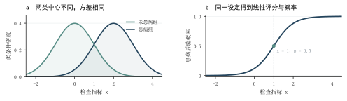
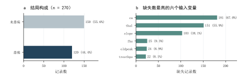

生物医学数据科学 · 方法简报双栏版式预览 · 2026
线性分类模型的概率建模与决策边界
以心脏病教学数据为例比较 Logistic 回归与线性判别分析
知识框架与实践审计 | 排版样稿 v0.1 | 2026 年 11 月
摘要 Logistic 回归与线性判别分析（LDA）均可产生线性分类边界，但概率来源与估计目标不同。本简报从线性评分、类条件分布和错误代价建立比较框架，并审计当前心脏病教学文件。270 条记录中，阳性 120 条、阴性 150 条；部分输入存在较高缺失比例。方法选择应综合编码维度、假设压力、概率质量及验证稳定性，避免将内部排序优势直接解释为临床效用。本样稿展示原理图、原文件审计与验证方案。
关键词：Logistic 回归；线性判别分析；概率校准；无泄漏验证；错误代价
引言
简单模型的价值在于把输入、概率与行动之间的关系明确化。对疾病二分类，研究者既要识别阳性个体，也要判断概率是否可信，以及漏诊与误报是否符合任务代价。线性边界因此是建模结构，模型选择仍需结合验证证据。[1,2]
线性评分与条件概率
评分 z 由截距与特征加权和组成。固定评分门槛在二维特征空间对应直线。Logistic 将评分经 sigmoid 转成概率；其线性假设作用于 log-odds。训练通过条件交叉熵估计系数，L2 惩罚可限制过大的系数。
z = β₀ + xᵀβ(1)
p = 1 / [1 + exp(−z)](2)
从类条件分布到后验
LDA 先估计各类均值、共享协方差和先验，再用 Bayes 规则计算后验。共享协方差允许类内相关；两类对数密度的共同二次项相减抵消，留下线性判别分数。若允许各类使用不同协方差，则通常形成 QDA 的二次边界。
X | Y = k ∼ N(μₖ, Σ)(3)
两类方法可得到相同形式的 sigmoid 评分，但 Logistic 直接拟合条件概率，LDA 则从生成分布推导评分。图 1 用一维设定展示这种联系。对二元或 one-hot 输入，高斯假设属于近似，应检查其预测和校准后果。
模型对象、概率来源与估计目标应一起解释；线性形式本身不能决定方法优劣。

图 1 | 从类条件分布到后验概率。设两类均值为 0、2，共同方差为 1，先验各半；分数差为 2x−2，因此 p＝sigmoid(2x−2)，默认边界为 x＝1。曲线为机制示意，不代表教学数据的拟合结果。
LINEAR CLASSIFICATION · METHODS01
线性模型：从假设到证据数据审计与讨论
数据审计与评价框架
围绕当前 CSV 的描述性审计，建立后续模型比较的证据边界。

图 2 | 当前教学文件的直接审计。左：结局分布；右：仅展示缺失记录数最高的六个输入，百分比分母均为 270。统计来自 data/heart.csv，未据此选择模型或阈值。
实践设计
按主标签分层划分 80% 开发集与 20% 锁定测试集，固定随机种子 2026。开发集交叉验证中，在每个训练折拟合数值填补、标准化、分类填补、one-hot 编码与模型；验证折仅转换并预测。模型与阈值在开发数据中选择，完整方案冻结后评价测试集。[2]
比较对象与估计负担
患病比例基线检查个人特征增益，Gaussian NB 提供类内条件独立参照。Logistic 与 LDA 则比较条件概率和生成分布两条路线。编码后维度决定参数计数；全水平指示列的冗余须单独处理。
| 模型 | 主要建模对象 |
|---|
| Logistic | 条件概率与线性 logit |
| LDA | 类条件高斯与共享协方差 |
| Gaussian NB | 类内条件独立的各特征分布 |
参考编码后维度为 q：Logistic 的系数计数为 q＋1；LDA 还需估计共享协方差。
审计发现与讨论
本次审计确认：样本构成为 120／150，ca 与 thal 分别缺失 181、151 条。课程文字中的“无缺失”与当前文件不一致，应以输入版本核对和训练折内处理为前提。高比例缺失会增加解释压力；填补可使算法运行，但不等同于恢复真实观测。
评价应分别报告排序（ROC-AUC、AP）、概率质量（Brier、log loss、校准）和阈值错误。代价 5×FN＋FP 连接漏诊与误报；AUC 较高并不自动意味着代价更低。Bootstrap 表达抽样不确定性，系数稳定性与预测稳定性需要分别检查。
解释边界
OR 解释需明确单位、参照与其他变量固定。模型系数为条件关联；内部评价不能自动支持因果效应、跨医院泛化或临床部署。完整分析应使主张、证据、推理与适用边界一致。
数据与图示说明 数据与图示：图 1 为设定分布的机制图；图 2 为项目当前 CSV 的基础审计。模型性能比较需在统一开发协议下另行报告。
资料来源 [1]《线性模型、LDA 与 Logistic Regression》课程课件，第 4–13 页。
[2] student-worksheet.md：建模目标、实验协议与评价框架。
[3] data/heart.csv：当前项目教学文件，审计日期 2026-11-03。
COURSE RESEARCH BRIEF · LAYOUT PROOF02